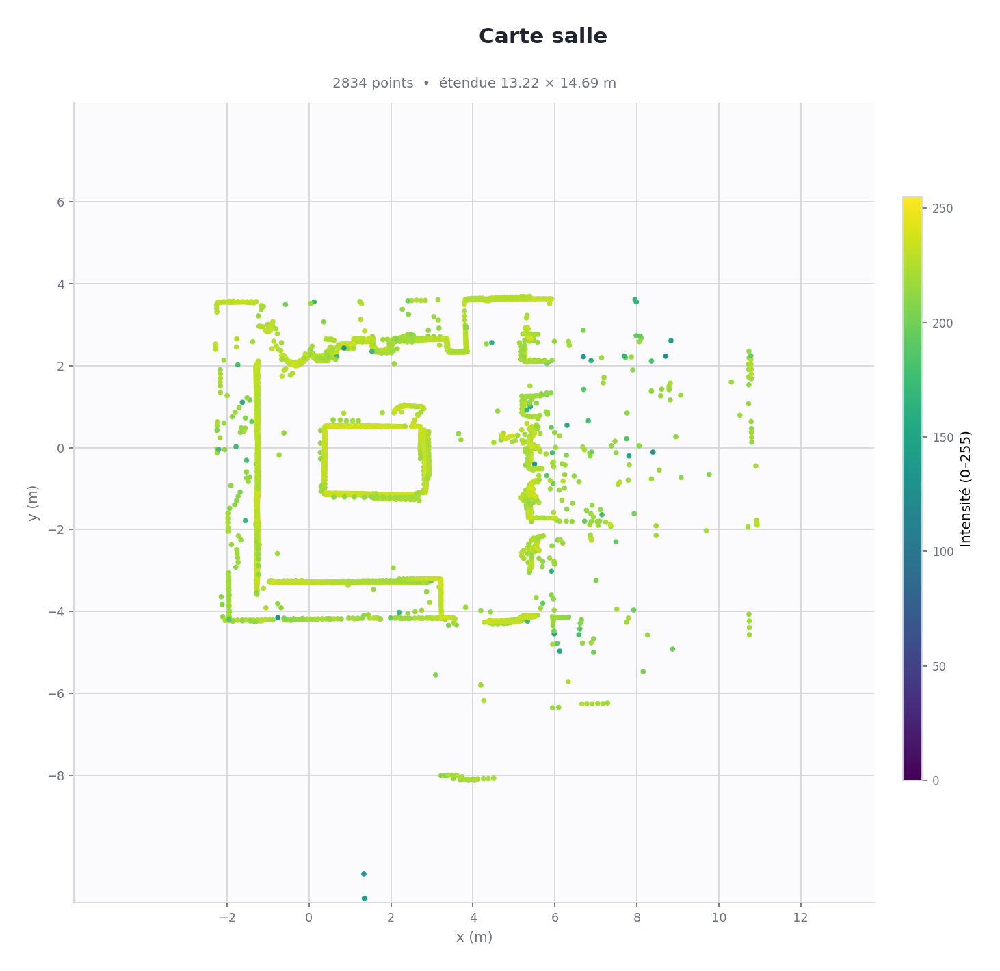
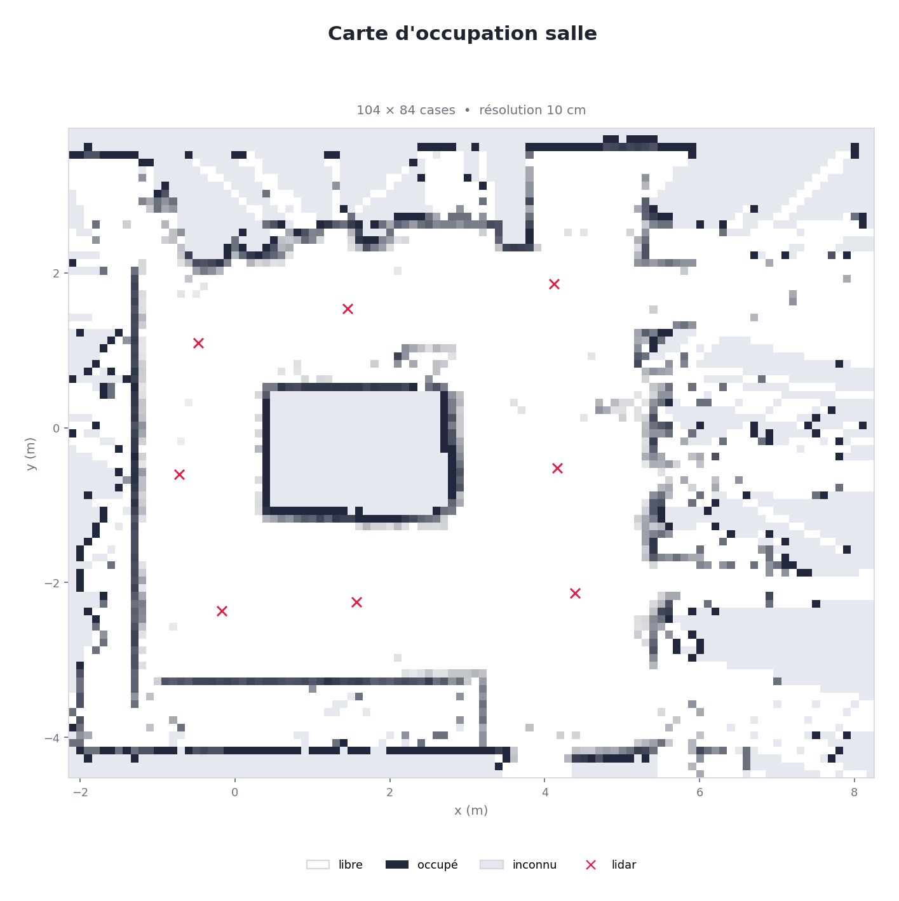
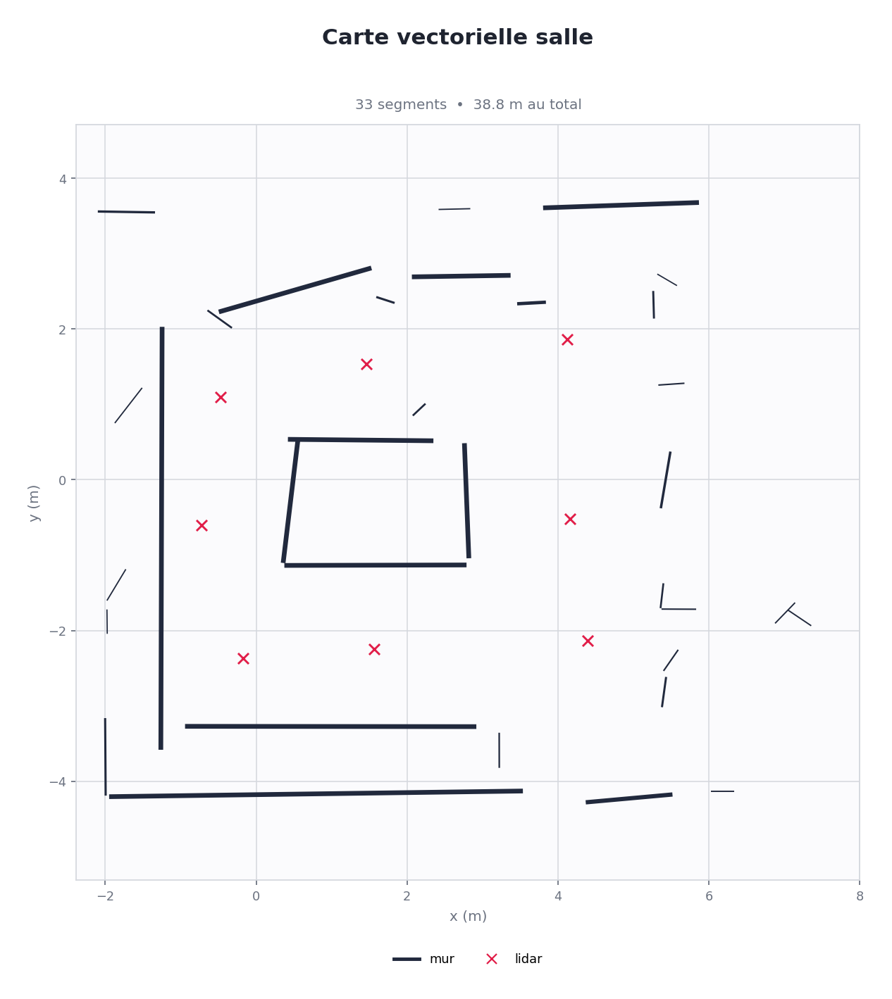

Section 1
Vue d'ensemble : de quoi parle ce TP ?
Le robot doit savoir où il est (localisation) et ce qui l'entoure (cartographie). Faire les deux en même temps s'appelle le SLAM.
Le pipeline complet (clique sur une boîte)
Les 3 jours en un coup d'œil
Jour 1 · Cartographie
Extraire les données du LD06, les afficher en nuage de points, construire une carte d'occupation (grille) et une carte vectorielle (segments).
Sections 2 → 8
Jour 2 · Localisation
Retrouver la pose du robot en alignant un scan sur une grille, une carte vectorielle, ou un scan de référence (scan matching), et mesurer la qualité de chaque méthode.
Sections 9 → 11
Jour 3 · SLAM
Combiner les deux : localiser et cartographier en même temps pour produire la carte complète de la salle. Bonus : pilotage automatique.
Section 12
Manipule les démos. Les cadres « Ton code » renvoient à ton dépôt, les cadres « Piège » listent les erreurs classiques.
Section 2 · Base
Le LiDAR LD06 : ce qu'il mesure vraiment
Un LiDAR 2D tourne et mesure la distance au premier obstacle dans chaque direction d'un plan horizontal.
2.1 Le principe : le temps de vol
Une diode émet une impulsion lumineuse infrarouge ; elle se réfléchit sur l'obstacle ; le capteur mesure le temps aller-retour Δt :
Pour un mur à 3 m : Δt = 2×3 / 3·10⁸ = 20 ns. C'est pour ça que ces capteurs, qui coûtent aujourd'hui une trentaine d'euros, sont un petit exploit d'électronique.
2.2 Fiche technique (utile pour dimensionner tes algorithmes)
| Paramètre | Valeur | Pourquoi ça t'intéresse |
|---|---|---|
| Portée max | ≈ 12 m | Au-delà, la mesure est inutilisable : tu filtres (MAX_RANGE = 12.0 dans ton code). |
| Résolution angulaire | 0,5° à 1° | À 5 m, deux points voisins sont séparés de ≈ 5 cm… à 10 m de ≈ 10 cm. Les murs lointains sont donc « pointillés ». |
| Rotation | 10 à 15 Hz | Un scan complet toutes les ≈ 0,1 s. Si le robot roule vite, le scan est « déformé » pendant sa prise. |
| Débit | ≈ 4500 pts/s | ≈ 450 points par tour à 10 Hz. |
| Liaison | UART 230 400 bauds, 5 V | Branché sur le 2ᵉ port série (Serial2) de l'ESP32. |
| Sens de rotation | Horaire (CW) | ⚠️ À l'envers du repère mathématique : la source d'erreurs n°1 (voir 2.4). |
2.3 Coordonnées polaires → cartésiennes
Le LiDAR renvoie, pour chaque point, une distance r et un angle θ mesurés dans son propre repère (centre du capteur, angle 0 = « l'avant » du capteur). Pour dessiner ou calculer des distances entre points, on passe en (x, y) :
Comme le LD06 tourne en sens horaire, son angle augmente dans le sens inverse du repère trigonométrique. Il faut donc corriger :
Si tu oublies la correction, ton plan de la salle apparaît en miroir (gauche ↔ droite). Le piège est vicieux : une salle presque symétrique a l'air « presque bonne », et l'erreur ne se voit qu'au moment de l'assemblage ou du scan matching. Teste toujours avec un obstacle asymétrique posé à un endroit connu (ex. un carton à droite du robot).
Les CSV de Data/Scans contiennent Angle(°) (brut, horaire), Distance(mm), Intensity puis x(mm), y(mm) déjà corrigés. Vérifie sur ta 1ʳᵉ ligne : angle 2,52°, 9281 mm → x = 9281·cos(2,52°) = 9272 ✓ et y = −408 < 0 : le signe « − » est précisément la correction du sens horaire.
2.4 Qualité de la mesure : intensité et limites
- Intensité (0–255) : la quantité de lumière revenue. Faible = mesure douteuse (surface noire, très oblique, très loin). Ton firmware ESP32 supprime tout ce qui est < 127 (
setIntensityThreshold(127)) et garde 0,1 m → 10 m (setDistanceRange(100, 10000)). - Vitres et miroirs : le laser traverse ou part ailleurs → le mur « n'existe pas » pour le LiDAR.
- Tissus noirs, soleil direct, brouillard : absorption ou saturation infrarouge.
- Un seul plan : le LiDAR ne voit que ce qui est à sa hauteur (pieds de chaise, pas le plateau d'une table).
- Bruit : quelques mm à quelques cm. D'où la moyenne sur plusieurs tours que fait ton
acquisition.py(secteurs de 1°).
Section 3 · Base
Trames, angles interpolés et scans 360°
Le LD06 envoie des paquets de 12 points (trames). Tu les décodes, tu reconstitues les angles, tu les empiles jusqu'à un tour complet.
3.1 Anatomie d'une trame de 47 octets
| Champ | Octets | Contenu |
|---|---|---|
| Header | 1 | 0x54 : début de trame (synchronisation) |
| Version/Taille | 1 | 0x2C : 12 mesures |
| Vitesse | 2 | °/s (little-endian). 0x0960 = 2400 °/s ≈ 6,7 tr/s |
| Angle début | 2 | centièmes de degré (0x155A = 5466 → 54,66°) |
| 12 × (dist, intensité) | 36 | dist = uint16 en mm, intensité = uint8 |
| Angle fin | 2 | centièmes de degré |
| Timestamp | 2 | horodatage interne (ms) |
| CRC8 | 1 | somme de contrôle sur les 46 octets précédents |
Total : 1+1+2+2+36+2+2+1 = 47 octets. Les entiers 16 bits sont envoyés octet de poids faible en premier (little-endian) : 60 09 se lit 0x0960.
La trame « exemple » du cours ne fait que 40 octets (il en faut 47). La démo génère une trame valide.
3.2 Reconstituer les angles intermédiaires
La trame ne donne que l'angle du premier et du dernier point. Les 10 autres s'interpolent :
Δθ = θ_total / 12
θ_n (LD06, horaire) = début + (n + 0,5) · Δθ pour n = 0 … 11
θ_n (math, anti-horaire) = 360 − θ_n(LD06)
Le « +360 mod 360 » gère le franchissement 359° → 0° à l'intérieur d'une trame (début = 359,0°, fin = 4,5° → total 5,5° et pas −354,5°).
3.3 Fermer un scan : détecter le passage 360° → 0°
On accumule les points trame après trame. Un nouveau scan commence quand l'angle brut repart de ~360° vers ~0° — et cela arrive au milieu d'une trame : il faut tester point par point, pas trame par trame.
La lib (ld06.cpp, computeData()) fait exactement ça : if (physAngle < lastPhysAngle) → rotation bouclée ; elle ne valide le scan que si lastPhysAngle − startPhysAngle > 340° (un « tour » quasi complet, pour ignorer les glitchs). Côté PC, acquisition.py lit les lignes CSV envoyées par printScanCSV (115200 bauds), attend un scan qui commence au point 0, et moyenne N tours par secteur d'angle de 1° (jamais par index de point : l'index n'est pas stable d'un tour à l'autre).
3.4 Côté matériel : de l'ESP32 au PC
- Câblage : TX du LiDAR → GPIO33 (RX de Serial2), entrée PWM → GPIO32, masse commune, 5 V.
- Firmware (
ESP32_LD06_Test.ino) : Serial2 à 230 400 bauds pour le LiDAR ; filtre intensité/distance ; PWM ≈ 80 % pour régler la vitesse de rotation ; envoi du scan au PC sur le port USB (115 200 bauds) en CSV ou en format Teleplot pour un coup d'œil rapide. - PC :
acquisition.py COMx dossier --tours N→ un CSV (et un PNG) horodaté dansData/Scans/…: tes jeux de données réels, réutilisés tout le reste du TP. - Sans fil : l'ESP32 a du Wi-Fi ; l'outil RobotControl du dossier Tools permet de piloter et de récupérer les scans en direct (utile pour le bonus temps réel).
Section 4 · Base
Poses et repères : placer un point dans le monde
Pour placer un point mesuré dans la carte, il faut connaître la pose du robot : sa position et son cap.
4.1 La pose 2D
- θ = 0° → le robot regarde vers +X ; θ = 90° → vers +Y ; θ = 180° → vers −X.
- En 3D on aurait 6 degrés de liberté [x, y, z, φ, θ, ψ] avec ψ = lacet : le θ de la 2D est le ψ de la 3D (le θ de la 3D est le tangage). Notation historique, source de confusions.
- Trois repères coexistent : monde (celui de la carte, fixe), robot (attaché au châssis) et capteur (le LiDAR est rarement au centre du robot : un décalage
setOffsetPosition(x, y, θ)existe dans la bibliothèque).
4.2 Changement de repère : robot → monde
Un point mesuré p_l = (x_l, y_l) dans le repère du robot a pour coordonnées dans le monde :
x_gy_g = cos θsin θ−sin θcos θ x_ly_l + x_ry_r
Ce que cette démo cache en plein jour : si la pose supposée est fausse, les points s'écartent des murs. Toute la localisation par scan matching consiste à chercher la pose pour laquelle le nuage « colle » à la carte. Tu viens de le faire à la main.
4.3 Composer des déplacements (⊕) : ne jamais additionner des poses
L'odométrie ou le scan matching donnent un déplacement exprimé dans le repère du robot (« j'ai avancé de 1 m, tourné de 30° »). Pour mettre la pose à jour il faut composer, pas ajouter :
y_t = y_{t−1} + Δx·sin θ_{t−1} + Δy·cos θ_{t−1}
θ_t = θ_{t−1} + Δθ (à ramener dans ]−180°, 180°])
θ = 179° + 5° = 184° n'est pas « différent » de −176° ; mais l'erreur d'angle entre 179° et −179° vaut 2°, pas 358°. Utilise toujours wrap(a) = ((a + π) mod 2π) − π avant de comparer ou d'afficher un angle (ton carto.wrap_angle).
Pour aller plus loin : pose relative et matrices homogènes
On regroupe rotation + translation dans une matrice 3×3 : T = [[cos θ, −sin θ, x],[sin θ, cos θ, y],[0,0,1]]. Alors p_g = T·p_l (en coordonnées homogènes), la composition est un produit matriciel T₁·T₂, et la pose de B vue depuis A est T_A⁻¹ · T_B. C'est ce qu'on utilise pour exprimer le résultat d'un scan matching scan-à-scan : « le robot est passé de la pose A à la pose B », soit Δ = A⁻¹ ⊕ B.
Section 5 · Jour 1 — TP 1 & 2
Visualiser des nuages de points et les assembler
Afficher plusieurs scans, chacun d'une couleur, avec une pose réglable par scan.
5.1 Pourquoi plusieurs scans ?
Depuis un seul point, le LiDAR est aveugle derrière les meubles et dans les angles morts. Pour couvrir la salle, tu poses le robot à 8 endroits (tes dossiers haut_gauche, bas, droite…), tu obtiens 8 nuages, chacun dans son repère local. Les assembler = trouver la pose (x, y, θ) de chaque scan dans un repère commun.
- Charger un CSV → liste de points (r, θ) → corriger le sens horaire → (x, y) repère robot.
- Pour chaque scan, une pose
(x, y, θ)éditable (curseurs, saisie, glisser-déposer). - Transformer chaque nuage avec sa pose (section 4.2) et le dessiner dans sa couleur.
- Quand deux murs se superposent bien, les poses sont correctes : on peut les enregistrer (ton
assemblage.json).
cartographie.py (≈ 1070 lignes) contient l'outil d'assemblage : load_scan, transform(pts, pose), wrap_angle, la classe Scan (nuage + pose + couleur) et Carte. Les 8 poses retenues pour ta salle sont dans Data/Cartes/salle/assemblage.json (ex. scan « bas » : x = 1,567 m, y = −2,251 m, θ = −3,6°) — ce sont elles qui donnent le résultat carte.png.
Section 6 · Jour 1 — TP 3
La carte d'occupation (grid map)
On découpe le monde en cellules. Un rayon qui traverse une cellule la prouve libre ; son point d'impact prouve une cellule occupée.
6.1 Les 5 étapes
- Définir la grille : taille (m) et résolution (m/cellule) ⇒ nombre de cellules. Une salle de 8 m × 6 m à 5 cm = 160 × 120 = 19 200 cellules. Choisir le contenu : binaire, probabiliste (uint8 0–255), ou structure riche (timestamp, compteur…). État initial : tout libre, tout occupé, ou tout inconnu (le plus honnête : 127 en uint8).
- Convertir les points : polaire → cartésien (robot) → monde (pose) → indices de cellule :
Monde → indice de cellulei = ⌊(x − x₀) / res⌋ j = ⌊(y − y₀) / res⌋(⌊ ⌋ = partie entière vers −∞, pas la troncature vers 0 :
int()casse les coordonnées négatives.) Avant : filtrer points trop proches, trop lointains, d'intensité trop faible. - Cellules traversées → libres : tracer le segment robot → impact (algorithme de Bresenham, ou échantillonnage régulier) et marquer toutes les cellules avant l'impact.
- Cellule d'impact → occupée : marquage direct, augmentation de probabilité, mise à jour d'un timestamp ou d'un compteur.
- Mise à jour continue : à chaque nouveau scan (aligné sur la carte), on répète 2-3-4. Nettoyage : décroissance temporelle, effacement des obstacles obsolètes, lissage spatial.
6.2 Bresenham : quelles cellules un rayon traverse-t-il ?
Bresenham trace une droite entre deux cellules en n'utilisant que des entiers : à chaque pas on avance d'une cellule selon l'axe « long » et on décide, via un terme d'erreur cumulé, s'il faut aussi avancer d'une cellule sur l'autre axe. Le résultat est le chemin de cellules le plus proche de la droite idéale. Tu peux aussi échantillonner le segment tous les ≈ res/2 et convertir chaque échantillon en indice (c'est ce que fait ton _raster, vectorisé avec numpy : plus simple et très rapide, au prix de pouvoir marquer deux fois une même cellule — d'où l'usage de compteurs).
6.3 Comment mettre à jour une cellule ? Trois modèles
| Modèle | Mise à jour | Avantage | Limite |
|---|---|---|---|
| Binaire | libre = 0, impact = 1 (le dernier gagne) | trivial, 1 bit/cellule | un seul mauvais point efface un mur ; aucune mémoire |
| Compteurs (ta méthode) | hits += 1 à l'impact, free += 1 au passage ; p = 2·hits / (2·hits + free) | moyenne sur toutes les observations ; l'impact pèse double pour garder des murs nets | le passé pèse autant que le présent (pas d'oubli sans étape en plus) |
| Log-odds (standard) | l += l_occ à l'impact, l += l_libre au passage ; p = 1/(1+e⁻ˡ) ; l borné (±5) | mise à jour par simple addition, oubli naturel grâce aux bornes, base du SLAM probabiliste | 2 paramètres à régler |
Pourquoi les log-odds ? Combiner deux observations indépendantes par la règle de Bayes devient une addition : l = ln(p/(1−p)). Pas de multiplication de probabilités à renormaliser.
6.4 Le compromis résolution / mémoire / robustesse
Une cellule ne doit pas être beaucoup plus petite que l'incertitude de ta mesure et de ta pose. Si ta pose est connue à ±5 cm, des cellules de 1 cm ne t'apportent que du bruit (murs « épais » et floutés) et coûtent 25× plus de mémoire qu'à 5 cm. Pour un ESP32, on stocke en uint8_t (1 octet par cellule).
6.5 Propriétés supplémentaires (encouragées par le TP)
- Durée de vie / oubli : multiplier périodiquement la confiance par ρ<1 — les objets mobiles (une porte, un humain) finissent par disparaître. Ton
temps_reel.pyutilise un oubli exponentiel ρ. - Filtrage : ignorer les cellules occupées isolées (une cellule seule n'est pas un mur : ton
algo_base._murs_sursexige des composantes connexes ≥ 8 cellules). - Cellules d'intérêt : coins, segments — utiles pour le scan matching.
occupation.py
- Encodage uint8 : 0 = libre, 255 = occupé, 127 = inconnu. Grille dimensionnée sur les percentiles 1–99 % des impacts (ignore les échos aberrants) ; garde-fou
MAX_CELLS = 1 500 000qui grossit la résolution si la grille serait trop fine. _raster: échantillonne chaque rayon par pas de res (au plus 900 pas), comptefreesur tout sauf la dernière cellule,hitssur la dernière.proba = 2·hits/(2·hits + free)·255: l'impact pèse double « pour garder des murs nets » même quand un rayon voisin traverse la cellule.MIN_RANGE = 0.05m (le point est dans le boîtier) etMAX_RANGE = 12m.Grille.proba_en(pts): lit la probabilité aux points du scan (hors grille → inconnu) — c'est la brique qui sert au scan matching sur grille (section 10).
Section 7 · Jour 1 — TP 4
La boîte à outils géométrique : les segments
Une carte vectorielle remplace des milliers de points par quelques segments. Voici les 6 outils de base du TP.
7.1 Les six outils
| Outil | Idée mathématique |
|---|---|
| Nuage → segments | regrouper les points voisins, ajuster une droite, couper là où ça ne colle plus (section 8) |
| Angle entre deux segments | produit scalaire des vecteurs unitaires : acos(|u·v|) ∈ [0°, 90°]. Le |·| rend l'angle indépendant du sens (un segment et son inverse sont équivalents). |
| Segments « proches » | trois conditions simultanées : angle ≤ tol_ang, écart perpendiculaire des extrémités de B à la droite de A ≤ tol_dist, et recouvrement ou petit trou ≤ tol_gap le long du mur |
| Fusion | droite des moindres carrés (ACP) des 4 extrémités, puis on garde les deux projections extrêmes |
| Intersection | résoudre P + t·r = Q + u·s ; valide si t ∈ [0,1] et u ∈ [0,1] |
| Découpage | couper le segment à l'intersection et garder le plus long côté (règles précises ci-dessous) |
7.2 L'intersection, pas à pas
Avec A = P → P + r (r = vecteur du segment A) et B = Q → Q + s :
t = ((Q − P) × s) / den u = ((Q − P) × r) / den
point = P + t·r
- den ≈ 0 ⇒ droites parallèles (ou colinéaires) : pas d'intersection unique. On compare à une tolérance relative : |den| ≤ TOL·|r|·|s| (c'est le sinus de l'angle ≤ TOL), pour que le test ne dépende pas de la longueur des segments.
- t et u sont des abscisses normalisées : 0 = premier point, 1 = second. L'intersection est sur le segment si 0 ≤ t ≤ 1 (à une tolérance TOL/longueur près, pour que la tolérance soit en mètres).
7.3 Le découpage : les règles exactes demandées
- L'intersection doit être sur les deux segments et strictement à l'intérieur du segment à couper (TOL < t < 1 − TOL).
- Intersection exactement à une extrémité ⇒ rien ne change (un T parfait ne coupe pas).
- Colinéaires / parallèles ⇒ pas découpés.
- Égalité de longueurs (à TOL près) ⇒ on garde le côté contenant le premier point du segment.
- Définir une tolérance numérique (TOL) et tester ces cas limites.
Pourquoi garder « le plus long côté » ? Un segment qui en traverse un autre a probablement un morceau « fantôme » (un rayon qui a dépassé le mur, une erreur de mesure) ; le grand côté est le mieux soutenu, c'est donc le plus probablement réel.
TOL (numérique, ~10⁻⁶ m) sert à décider si deux nombres flottants sont « égaux » ; elle n'a rien à voir avec les tolérances géométriques (10° / 20 cm / 30 cm) qui décident si deux murs sont « le même mur ». Ne les mélange pas — ton code a bien deux jeux de constantes distincts (TOL vs ANG_TOL, DIST_TOL, GAP_TOL).
vectorielle.py
Les six outils y sont : angle_between, proches, fusionner, intersection, decouper (+ _params, le cœur commun d'intersection et découpage). Constantes : TOL = 1e-6, ANG_TOL = 10°, DIST_TOL = 0,20 m, GAP_TOL = 0,30 m. Ce guide a porté ces fonctions en JavaScript pour la démo : tu peux comparer les résultats avec ceux de Python.
Section 8 · Jour 1 — TP 5
La carte vectorielle : du nuage aux murs
On garde des segments (les murs) au lieu des points : c'est compact et précis.
8.1 Le pipeline en six étapes
- Prétraitement : filtrer portée, intensité, points aberrants ; convertir en monde.
- Segmentation (clusterisation) : parcourir le scan dans l'ordre des angles ; un saut de distance entre deux points voisins (> seuil) coupe le cluster. Le seuil doit croître avec la distance (l'espacement naturel des points est d·Δθ).
- Reconnaissance géométrique : sur chaque cluster, ajuster une droite (régression linéaire / ACP). Si le pire point est à plus de tol de la droite, couper là et recommencer sur les deux moitiés (split, façon Douglas-Peucker). RANSAC est l'alternative robuste aux points aberrants.
- Fusion : un même mur vu de deux scans donne deux segments presque identiques →
proches()puisfusionner(). - Découpage : les dépassements (segment qui traverse un autre) sont coupés —
decouper(). - Nettoyage : retirer les fragments trop courts ou trop peu soutenus (< N points) ; ajouter timestamp/confiance.
8.2 Mettre à jour une carte existante
Quand un nouveau scan arrive, chaque nouveau segment est comparé à la carte : nouveau ⇒ ajout ; similaire ⇒ remplacement, conservation ou (le plus courant) fusion ; traversé par un rayon du robot vers un point ⇒ le mur n'est probablement plus là : on raccourcit, scinde ou supprime le segment (ou on baisse sa confiance). C'est la gestion des absences : une porte qui s'ouvre, un meuble déplacé.
8.3 Grille ou vectoriel ?
| Carte d'occupation | Carte vectorielle | |
|---|---|---|
| Contenu | une valeur par cellule | une liste de segments |
| Mémoire | fixe, élevée à haute résolution (19 200 octets pour une salle à 5 cm) | très faible (33 segments × 4 nombres pour ta salle réelle) |
| Précision | limitée par la cellule | continue (sub-cellule) |
| Robustesse au bruit | excellente (moyenne naturelle) | sensible : l'extraction peut se tromper |
| Environnements | tous | structurés (murs, couloirs) ; mal adaptée aux plantes, foules |
| Navigation (espace libre) | directe | à reconstruire |
| Scan matching | lecture de cellules | distance point-segment : précis, rapide |
vectorielle.build(rays, tol, grille=…) : (0) filtre ; (option) garde seulement les points qui tombent dans une case bien occupée de la grille — la grille filtre les artefacts, le nuage garde la précision ; (1) clusters aux discontinuités (GAP_MIN = 0,10 m, GAP_RATIO = 0,06·d) puis _extract : droite ACP, coupée récursivement au pire point (DEFAULT_TOL = 4 cm) ; (2) _merge ; (3) _dedoubler : une corde inclinée redondante avec un mur mieux soutenu (dérive d'assemblage) est absorbée ; (4) _decouper_tout ; (5) retire segments < MIN_LEN = 12 cm ou peu soutenus. Résultat enregistré : Data/Cartes/salle/vectoriel.csv (33 segments + nombre de « hits »).
Section 9 · Jour 2
Localiser un robot : où suis-je ?
Localiser = estimer la pose [x, y, θ]. Relatif : on cumule des déplacements (ça dérive). Absolu : on se compare à quelque chose de fixe.
Localisation relative
« De combien ai-je bougé depuis tout à l'heure ? » On intègre des déplacements : X_t = X_{t−1} ⊕ ΔX.
✔ rapide, autonome, continue
✘ dérive : les erreurs s'accumulent pour toujours
Odométrie (roues codeuses), IMU, odométrie visuelle, scan matching scan-à-scan.
Localisation absolue
« Où suis-je par rapport à quelque chose de fixe et connu ? » Chaque estimation est indépendante des précédentes.
✔ pas de dérive, relocalisation possible
✘ exige une infrastructure ou une carte
GPS, balises UWB, marqueurs ArUco, motion capture, scan matching sur carte.
9.1 L'odométrie : la base de la localisation relative
Des encodeurs comptent les tours de roue. Pour un robot différentiel (rayon de roue r, entraxe L), pendant un pas de temps :
x ← x + Δs · cos(θ + Δθ/2) y ← y + Δs · sin(θ + Δθ/2) θ ← θ + Δθ
9.2 Fusionner pour être meilleur que chaque capteur
Aucun capteur n'est parfait. La fusion combine une prédiction (modèle de mouvement / odométrie) et une mesure (LiDAR/GPS), en pondérant chacune par sa confiance. Le filtre de Kalman est la référence ; l'idée tient dans une seule formule — la moyenne pondérée par l'inverse de la variance :
Les autres approches de fusion (Kalman étendu, particules, graphes…)
- EKF / UKF : Kalman pour modèles non linéaires (linéarisation locale ou points sigma). Standard pour odométrie + IMU + GPS.
- Filtre de particules (Monte-Carlo Localization) : l'état est un nuage d'hypothèses de pose, pondérées par la vraisemblance des mesures, puis ré-échantillonnées. Gère plusieurs hypothèses (couloirs identiques) mais coûte cher en particules. Tu l'implémentes dans
algo_particules.py. - Filtre complémentaire : gyroscope (rapide, dérive) + accéléromètre (lent, stable), pondération par fréquence ; léger, parfait en microcontrôleur.
- Graph-SLAM : poses = nœuds, mesures = arêtes ; on minimise l'erreur globale, ce qui permet de corriger la dérive après une fermeture de boucle.
- Fusion neuronale : un réseau apprend à pondérer les capteurs selon le contexte ; puissant mais « boîte noire ».
9.3 Notre cas : le LiDAR comme capteur de localisation
Le LiDAR peut jouer les deux rôles, selon la référence à laquelle on compare le scan courant :
| Référence | Type | Ce qu'on obtient | Condition |
|---|---|---|---|
| Carte d'occupation | absolue | pose dans le repère de la carte | le scan doit voir une zone couverte par la grille |
| Carte vectorielle | absolue | pose dans le repère de la carte | idem ; environnement structuré |
| Scan de référence | relative | déplacement (Δx, Δy, Δθ) entre deux scans | scans pris près l'un de l'autre |
Section 10 · Jour 2 — TP 1, 2, 3
Le scan matching : toutes les méthodes à tester
Tu as un scan (points dans le repère du robot) et une référence. Tu cherches la pose (x, y, θ) pour laquelle les points, placés dans le monde, tombent sur les obstacles de la référence.
10.1 Ce qui est commun à toutes les méthodes
- Transformer le scan avec la pose candidate.
- Associer chaque point à la référence (cellule, segment ou point le plus proche).
- Scorer : un nombre qui mesure l'alignement.
- Optimiser : changer la pose pour améliorer le score. C'est la seule étape qui change d'une méthode à l'autre.
10.2 Le score selon la référence
| Référence | Association | Score |
|---|---|---|
| Carte d'occupation | le point tombe dans une cellule | moyenne des occupations sous les points (grille floutée) |
| Carte vectorielle | segment le plus proche | − moyenne des d² aux segments (d plafonnée) |
| Scan de référence | point le plus proche | − moyenne des d² au point le plus proche |
Pourquoi flouter ? Une grille 0/1 donne un score plat dès qu'un point est à plus d'une cellule d'un mur : aucune méthode ne sait où aller. Floutée (ou en distance), la grille devient une « colline » dont le sommet est la bonne pose.
10.3 Les 5 méthodes, une par une
① Force brute (exhaustive)
En une phrase : j'essaie toutes les poses autour du départ et je garde la meilleure.
- Fixer une fenêtre (ex. ±30 cm, ±15°) et un pas (ex. 3 cm, 1,5°).
- Pour chaque (x, y, θ) de la fenêtre : transformer le scan, calculer le score.
- Garder le maximum.
Coût : 21 × 21 × 21 = 9 261 évaluations. Précision : égale au pas. Réussit si la vraie pose est dans la fenêtre, sans risque de minimum local. Échoue sinon. Dans ton code : algo_exhaustif.py (le scan est pré-tourné une fois par θ, toutes les translations évaluées d'un coup).
② Descente de gradient
En une phrase : je regarde dans quel sens le score monte et j'avance de ce côté.
- Gradient numérique, axe par axe : g = (score(p+h) − score(p−h)) / 2h.
- Avancer d'un pas dans le sens du gradient.
- Si le score monte : on garde et on agrandit le pas (×1,4). Sinon : on réduit (×0,6).
- Stop quand les pas sont minuscules (≈ 2 mm, 0,1°).
Coût : quelques dizaines à centaines d'évaluations. Échoue sur un plateau (score plat) ou un faux sommet : il faut un score lisse et un départ dans le bon « bassin ». Variantes : Gauss-Newton, Levenberg-Marquardt (utilisent la courbure pour converger plus vite). Dans ton code : algo_descente.py (suit le signe du gradient : insensible à l'écart d'échelle mètres/radians).
③ Multi-résolution
En une phrase : je cherche grossièrement partout, puis j'affine là où c'est bon.
- Niveau 1 : pas larges (10 cm, 5°), peu de points du scan, grille réduite.
- Niveau suivant : fenêtre = ±2 pas du niveau précédent, centrée sur le meilleur, pas divisés par 2.
- Répéter jusqu'au pas fin (1 cm, 0,5°).
Coût : ≈ 3 000 évaluations au lieu de 9 261 pour la même précision. Échoue si le niveau grossier rate un pic fin. Dans ton code : algo_multires.py (pyramide de grilles par max-pool : un mur fin survit à la réduction).
④ Probabiliste (filtre à particules)
En une phrase : je lance beaucoup d'hypothèses de pose, je garde les plus plausibles et je les resserre.
- Tirer N poses (ex. 160) autour du départ, avec un bruit (σ = 15 cm, 6°).
- Scorer chacune ; poids = exp((score − max) / T).
- Ré-échantillonner : les poses à fort poids sont dupliquées, les faibles disparaissent.
- Rebruiter avec un σ plus petit (×0,65) et recommencer (≈ 10 générations).
- Estimation = moyenne pondérée de la dernière génération.
Réglages : N, σ initial, température T, nombre de générations. Fort face au bruit et aux ambiguïtés (plusieurs poses plausibles). Limites : résultat aléatoire (fixe la graine pour comparer), coût élevé. Variantes : recuit simulé, RANSAC. Dans ton code : algo_particules.py.
⑤ Calcul direct (ICP)
En une phrase : j'associe chaque point à l'obstacle le plus proche, je calcule d'un coup la correction qui les rapproche, je recommence.
- Placer le scan avec la pose courante.
- Associer chaque point au plus proche (rejeter si distance > gate, qui décroît de 50 cm à 6 cm).
- Résoudre en moindres carrés (système 3×3) la correction (δx, δy, δθ).
- Appliquer, répéter jusqu'à correction négligeable (4 à 10 itérations).
Deux variantes : point-à-point (scan ↔ scan : formule fermée de Procrustes, voir ci-dessous) et point-à-ligne (carte vectorielle : on ne pénalise que la distance perpendiculaire au mur, plus précis car glisser le long du mur ne coûte rien). Inapplicable sur une grille (pas de géométrie à projeter). Échoue si le départ est trop loin (mauvaises associations). Dans ton code : algo_direct.py.
a = Σ (pᵢ−p̄)·(qᵢ−q̄) b = Σ (pᵢ−p̄) × (qᵢ−q̄)
Δθ = atan2(b, a) t = q̄ − R(Δθ)·p̄
10.4 Quelle méthode sur quelle référence ?
| Méthode | Grille | Vectorielle | Scan de référence | Rayon de convergence |
|---|---|---|---|---|
| Force brute | ✔ | ✔ | ✔ | la fenêtre |
| Descente de gradient | ✔ (grille floutée) | ✔ | ✔ | le bassin d'attraction |
| Multi-résolution | ✔ | ✔ | ✔ | la fenêtre du 1ᵉʳ niveau |
| Particules | ✔ | ✔ | ✔ | le σ initial |
| Calcul direct (ICP) | ✘ | ✔ point-à-ligne | ✔ point-à-point | le gate d'association |
Autres méthodes (facultatif) : NDT (cellules gaussiennes), feature-to-feature (appariement de coins/segments), moments géométriques (estimation directe rapide, utile comme initialisation).
10.5 Démo : le paysage du score et le chemin de chaque méthode
À gauche : carte, scan à la pose estimée (orange), vraie pose (vert). À droite : score en (x, y) ; le jaune est le meilleur. Déplace la poignée ou lance un algorithme.
- Force brute : beaucoup d'évaluations, échoue avec 0,5 m d'écart (hors fenêtre).
- Descente : très peu d'évaluations ; ici (salle fermée, un seul bassin) elle converge même de loin.
- Multi-résolution : même précision que la force brute pour ~3× moins d'évaluations.
- Particules : le nuage violet se resserre sur la bonne pose.
- ICP : 4 à 10 itérations, précision au mm.
10.6 Pourquoi ça échoue parfois
- Salle symétrique (rectangle) : plusieurs poses presque aussi bonnes. Donne un bon départ (odométrie).
- Couloir lisse : la position le long du couloir est indéterminée.
- Objet absent de la carte : points aberrants. Plafonner les distances, ne garder que les 75 % meilleurs appariements.
- Scan pris en mouvement : déformé.
Chaque méthode respecte le même contrat : algo.run(score_fn, pose0, contexte) → Resultat(pose, historique, n_evals, temps) (algo_base.py). Le registre scan_matching.ALGORITHMES les liste ; localisation.py et les tests itèrent dessus.
Section 11 · Jour 2 — évaluation chiffrée
Comparer les méthodes honnêtement
Le TP demande une évaluation chiffrée et reproductible. Voici le protocole, puis une démo qui l'exécute.
11.1 Le protocole
- Mêmes données pour tout le monde : mêmes scans, mêmes références, mêmes poses initiales pour toutes les méthodes (sinon la comparaison est biaisée).
- Une vérité terrain : en simulation, la pose est connue exactement. Sur le robot réel, elle est mesurée (mètre, repères au sol) : indique son incertitude (typiquement ± 1-2 cm et ± 1-2°). On ne peut pas prétendre une précision meilleure que la vérité terrain !
- Quatre métriques : erreur de position (m), erreur d'angle (°), temps de calcul (ms) et taux de réussite.
- Un seuil de réussite explicite (ex. erreur < 5 cm et < 2°) — à justifier (précision de la grille, de la vérité terrain…).
- Varier la pose initiale (rayon croissant, nombreux tirages aléatoires) pour mesurer la sensibilité à l'initialisation : c'est ce qui sépare une méthode locale d'une méthode globale.
- Rapporter médiane (robuste) plutôt que moyenne, et le nombre d'échecs séparément.
Une phrase du type : « Sur la référence X, la méthode A réussit à N % jusqu'à un écart de … cm puis décroche, pour … évaluations et … ms ; la méthode B est … fois plus rapide mais … » — avec tes chiffres et en expliquant pourquoi (fenêtre de recherche, bassin d'attraction, rayon d'appariement). Dans la démo ci-dessus, chaque méthode a un rayon de convergence différent : c'est le résultat à discuter, pas à deviner.
test_scan_matching.py vérifie la justesse (erreur < 10 cm et < 5°) sur une salle synthétique, puis sur ta carte réelle (< 1 s par run), plus le scénario réel j2 (deux scans à quelques cm). C'est un très bon test de non-régression. Pour répondre pleinement au TP il te manque (à ma lecture) un tableau multi-tirages : taux de réussite et erreurs en fonction du rayon de la pose initiale. C'est exactement ce que fait la démo ci-dessus ; le script à écrire est une boucle sur rng.uniform autour de la vérité, avec les mêmes tirages pour toutes les méthodes.
Section 12 · Jour 3
SLAM : cartographier et se localiser en même temps
Pour cartographier il faut la pose ; pour trouver la pose il faut la carte. Le SLAM alterne les deux, scan après scan.
12.1 La boucle de base (SLAM « scan-to-map »)
- Prédire la pose avec l'odométrie (ou avec la dernière pose, si le robot est lent).
- Recaler : scan matching du nouveau scan sur la carte construite jusqu'ici, en partant de la pose prédite → pose corrigée.
- Contrôler la qualité : si le score de recalage est mauvais (scan aberrant, personne devant le LiDAR), rejeter le scan : on ne dégrade pas la carte avec une pose douteuse.
- Mettre à jour la carte avec le scan placé à la pose corrigée (grille : rayons libres + impact ; vectoriel : extraction + fusion).
- Recommencer.
12.2 La dérive et la fermeture de boucle
Même avec du scan matching, chaque recalage a une petite erreur résiduelle, et ces erreurs s'accumulent le long de la trajectoire. Quand le robot revient à un endroit déjà vu, la carte ne se referme pas : deux murs qui devraient coïncider sont décalés. Le cours distingue :
- Détection de boucle : reconnaître un lieu déjà visité (scan très ressemblant à un ancien scan, ou pose estimée proche d'une ancienne).
- Caractérisation : mesurer l'écart (x, y, θ) entre « où je pensais être » et « où je suis si je réaligne sur l'ancienne observation ».
- Correction : répartir cette erreur sur toute la trajectoire (optimisation de poses / graph-SLAM) puis reconstruire la carte avec la trajectoire corrigée. Ça suppose d'avoir gardé les scans et les poses (c'est pourquoi ton
temps_reel.pyexporte les scans bruts dans…/scans/etreconstruire_live.pysait refaire la carte à partir d'eux).
« Début de SLAM » = boucle prédire → recaler → mettre à jour, avec contrôle de qualité. La fermeture de boucle complète est un approfondissement ; sur une petite salle, un recalage scan-to-map contre une carte globale limite déjà fortement la dérive (le robot se recale en permanence sur la carte entière, pas seulement sur le scan précédent).
12.3 Architecture temps réel et bonus « le robot construit la carte seul »
C'est (en simplifié) l'architecture de ton temps_reel.py : un thread lit le port série en continu pour ne jamais perdre un scan ; à chaque cycle de traitement, les scans reçus entre-temps sont moyennés (le moyennage suit le calcul au lieu de le bloquer) ; le recalage est rejeté sous un seuil de qualité ; la grille persistante oublie lentement (ρ) pour ne pas garder les objets disparus ; un mode --replay rejoue des scans enregistrés sans matériel.
Bonus : exploration automatique
Cibler les frontières (cellules libres voisines de cellules inconnues), planifier un chemin dans le libre (A*), y aller, recommencer.
Section 13 · Mon travail
Mon dépôt face au sujet du TP
État des lieux de ton dépôt face au sujet, à vérifier par toi.
| Exigence du TP | Dans ton dépôt | Constat |
|---|---|---|
| J1·1 Extraction des données | Acquisition/acquisition.py, Robot/ESP32_LD06_Test, Data/Scans/j1, j2 | présent 8 scans de la salle + scans de test (avec/sans filtre, avec/sans moyenne) + 2 scans j2 |
| J1·2 Visualisation + poses éditables | visualisation.py, cartographie.py | présent assemblage sauvegardé dans assemblage.json |
| J1·3 Grid map (création + mise à jour) | occupation.py, CarteLive dans temps_reel.py | présent construction + mise à jour incrémentale avec oubli |
| J1·4 Outils sur segments (6 opérations) | vectorielle.py | présent à tester je n'ai pas trouvé de fichier de test source des cas limites du découpage (seul un test_vectorielle.cpython-313.pyc orphelin traîne dans __pycache__) |
| J1·5 Carte vectorielle | vectorielle.build, Data/Cartes/salle/vectoriel.csv | présent 33 segments |
| J2 Localisation × 3 références | algo_*.py (5 méthodes), scan_matching.py, localisation.py | présent bien au-delà du minimum (5 méthodes) |
| J2 Évaluation chiffrée (taux, sensibilité) | test_scan_matching.py | à compléter test de justesse sur un départ bruité ; il manque un tableau multi-tirages avec taux de réussite (voir section 11) |
| J3 SLAM + carte complète | temps_reel.py, reconstruire_live.py, Data/Cartes/Live_* | présent live + replay + reconstruction |
| Bonus : déplacement automatique | — | non trouvé |
| Git : commit au moins toutes les heures | git log | à faire dernier commit : 03/11 15:04. Au moment où j'ai regardé, 12 fichiers Python non suivis (algo_*.py, localisation.py, temps_reel.py, scan_matching.py, les tests…) et 16 dossiers de données (Live_*, j2) hors de l'historique |
| Livrable : zip + instructions + synthèse | — | à faire pas de README ; la synthèse personnelle n'existe pas encore |
Résultats visuels déjà obtenus



Les images ne s'affichent que si ce fichier reste dans le dossier Cours/ du dépôt.
Chronologie git (3 novembre)
- 10:28 → 11:22 — Firmware ESP32, ressources, filtrage LiDAR.
- 11:40 → 12:09 —
acquisition.py(moyenne par secteur de 1°), scans de test, scans de la salle. - 12:50 → 12:51 — Script de cartographie, assemblage de la salle, carte d'occupation.
- 15:02 → 15:04 — Probabilité d'occupation, carte vectorielle, assemblage final. (puis plus rien dans l'historique)
Section 14 · Mon travail
Pièges fréquents & checklist du livrable
| Symptôme | Cause probable | Contrôle |
|---|---|---|
| Salle en miroir | sens horaire oublié (θ_math = −θ_LD06) | obstacle asymétrique à gauche/droite connus |
| Carte 1000× trop grande ou minuscule | mm ↔ m | les CSV sont en mm, les poses en m |
| Rotations absurdes | degrés ↔ radians | numpy/math : radians ; interfaces : degrés |
| Erreur d'angle de ≈ 360° | pas de wrap_angle avant comparaison | toujours normaliser les différences |
| Robot qui tourne autour de l'origine du monde | translation puis rotation | R·p + t, dans cet ordre |
| Murs décalés d'une cellule, ou trous vers x < 0 | int() au lieu de floor() ; origine de grille mal gérée | tester avec des coordonnées négatives |
| Image de la carte retournée | axe Y de l'image vers le bas | imshow(origin="lower") ou retourner |
| Murs « fantômes » dans la grille | points de faible intensité, ou trop proches (boîtier) | filtres intensité + MIN_RANGE |
| Rayons qui effacent un mur | mise à jour binaire, ou impact marqué avant les cellules libres | proba/log-odds ; traiter l'impact en dernier |
| Le scan matching « saute » à 180° | salle symétrique, départ trop loin | pose initiale (odométrie), score de qualité, rejet |
| Résultats non comparables entre méthodes | départs différents ou seuils flous | mêmes poses initiales, seuil de réussite explicite |
| Carte qui dérive en live | recalage accepté malgré un mauvais score | seuil de qualité + rejet |
Checklist du livrable
Trame de la synthèse personnelle
- Pour chaque outil (acquisition, visualisation, grid map, segments, carte vectorielle, 3 localisations, SLAM) : résultat visuel (capture), choix effectués (résolution, seuils, tolérances — avec pourquoi), fonctionnalités, méthodes implémentées, limites constatées.
- Évaluation chiffrée du jour 2 (tableau + 1 graphique de sensibilité).
- Récapitulatif : ce que tu retiens, ce que tu as aimé, moins aimé, et ce que tu améliorerais (fermeture de boucle, odométrie, NDT, exploration auto…).
Section 15 · Auto-évaluation
Quiz & glossaire
Quinze questions pour tester ta compréhension.